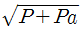
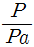
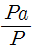
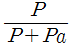

승강기기능사 (2014-04-06 기출문제)
1과목: 승강기개론
1. 엘리베이터에 반드시 운전자가 있어야 운행이 가능한 조작방식은?
- 반자동방식
- 단식자동방식
- 승합전자동
- ATT조작방식과 단식자동방식
(정답률: 57%)

2. 도어 인터록 장치의 구조로 가장 옳은 것은?
- 도어 스위치가 확실히 걸린 후 도어 인터록이 들어가야 한다.
- 도어 스위치가 확실히 열린 후 도어 인터록이 들어가야 한다.
- 도어록 장치가 확실히 걸린 후 도어 스위치가 들어가야 한다.
- 도어록 장치가 확실히 열린 후 도어 스위치가 들어가야 한다.
(정답률: 62%)
3. 트랙션 머신 시브를 중심으로 카 반대편의 로프에 매달리게 하여 카 중량에 대한 평형을 맞추는 것은?
- 조속기
- 균형체인
- 완충기
- 균형추
(정답률: 84%)
4. 비상용 엘리베이터에 대한 설명으로 옳지 않은 것은?
- 평상시는 승객용 또는 승객ㆍ화물용으로 사용할 수 있다.
- 카는 비상운전시 반드시 모든 승강장의 출입구마다 정지할 수 있어야 한다.
- 별도의 비상전원장치가 필요하다.
- 도어가 열려 있으면 카를 승강시킬수 없다.
(정답률: 54%)
5. 승객과 운전자의 마음을 편하게 해주기 위하여 설치하는 장치는?
- 파킹장치
- 통신장치
- 조속기장치
- BGM장치
(정답률: 92%)
6. 3상 교류의 단속도 전동기에 전원을 공급하는 것으로 기동과 정속운전을 하고 정지는 전원을 차단한 후 제동기에 의해 기계적으로 브레이크를 거는 제어방식은?
- 교류1단 속도제어
- 교류2단 속도제어
- VVVF제어
- 교류귀환 전압제어
(정답률: 51%)
7. 구동체인이 늘어나거나 절단되었을 경우 아래로 미끄러지는 것을 방지하는 안전장치는?
- 스텝체인 안전장치
- 정지스위치
- 인입구 안전장치
- 구동체인 안전장치
(정답률: 81%)
8. 트랙션 권상기의 설명 중 옳지 않은 것은?
- 기어식과 무기어식 권상기가 있다.
- 행정거리의 제한이 없다.
- 소요동력이 크다.
- 지나치게 감기는 현상이 일어나지 않는다.
(정답률: 51%)
9. 조속기에서 과속스위치의 작동원리는 무엇을 이용한 것인가?
- 회전력
- 원심력
- 조속기 로프
- 승강기의 속도
(정답률: 62%)
10. 승강장 도어의 측면 개폐방식의 기호는?
- A
- CO
- S
- T
(정답률: 75%)
11. 회전운동을 하는 유희시설이 아닌 것은?
- 관람차
- 비행탑
- 회전목마
- 모노레일
(정답률: 77%)
12. 전기식 엘리베이터 기계실의 구비조건으로 틀린 것은?(관련 규정 개정전 문제로 여기서는 기존 정답인 1번을 누르면 정답 처리됩니다. 자세한 내용은 해설을 참고하세요.)
- 기계실의 크기는 작업구역에서의 유효높이는 2.5m이상이어야 한다.
- 기계실에는 소요설비 이외의 것을 설치하거나 두어서는 안된다.
- 유지관리에 지장이 없도록 조명 및 환기 시설은 승강기 검사기준에 적합하여야 한다.
- 출입문은 외부인의 출입을 방지할 ᅟ수 있도록 잠금장치를 설치하여야 한다.
(정답률: 84%)
13. T형 가이드레일의 공칭 규격이 아닌 것은?
- 8K
- 14K
- 18K
- 24K
(정답률: 83%)
14. 유입완충기의 부품이 아닌 것은?
- 완충고무
- 플런저
- 스프링
- 유량조절밸브
(정답률: 45%)
15. 전기식 엘리베이터 기계실의 조도는 기기가 배치된 바닥명에서 몇 lx이상이어야 하는가?
- 150
- 200
- 250
- 300
(정답률: 83%)
2과목: 안전관리
16. 직접식 유압엘리베이터의 장점이 되는 항목은?
- 실린더를 보호하기 위한 보호관을 설치할 필요가 없다.
- 승강로의 소요평면 치수가 크다.
- 부하에 의한 카 바닥의 빠짐이 크다.
- 비상정지장치가 필요하지 않다.
(정답률: 62%)
17. 기종ㆍ영도를 표시하는 엘리베이터의 기호 연결이 옳지 않은 것은?
- P : 전기식(로프식) 일반 승객용
- R : 전기식(로프식) 주택용
- B : 전기식(로프식) 침대용
- S : 전기식(로프식) 비상용
(정답률: 54%)
18. 카가 어떤 원인으로 최하층을 통과하여 피트에 도달했을 때 카의 충격을 완화시켜 주는 장치는?
- 완충기
- 비상정지장치
- 조속기
- 과부하감지장치
(정답률: 87%)
19. 재해의 직접원인에 해당되는 것은?
- 안전지식의 부족
- 안전수칙의 오해
- 작업기준의 불명확
- 복장, 보호구의 결함
(정답률: 70%)
20. 다음 중 엘리베이터 자체 점검시의 점검 항목으로 크게 중요하지 않는 사항은?
- 브레이크장치
- 와이어로프 상태
- 비상정지장치
- 각종 계전기의 명판 부착 상태
(정답률: 85%)
21. 안전사고의 발생요인으로 심리적인 요인에 해당되는 것은?
- 감정
- 극도의 피로감
- 육체적 능력 초과
- 신경계통의 이상
(정답률: 74%)
22. 작업자의 재해 예방에 대한 일반적인 대책으로 맞지 않는 것은?
- 계획의 작성
- 엄격한 작업감독
- 위험요인의 발굴 대처
- 작업지시에 대한 위험 예지의 실시
(정답률: 61%)
23. 엘리베이터로 인하여 인명 사고가 발생했을 경우 안전(운행)관리자의 대처사항으로 부적합한 것은?
- 의약품, 들것, 사다리 등의 구급용구를 준비하고 장소를 명시한다.
- 구급을 위해 의료기관과의 비상연락체계를 확립한다.
- 전문 기술자와의 비상연락체계를 확립한다.
- 자체점검에 관한 사항을 숙지하고 기술적인 사고 요인을 검사하여 고장 요인을 제거한다.
(정답률: 66%)
24. 다음 중 정기점검에 해당되는 점검은?
- 일상점검
- 월간점검
- 수시점검
- 특별점검
(정답률: 72%)
25. 다음 중 방호장치의 기본 목적으로 가장 옳은 것은?
- 먼지 흡입 방지
- 기계 위험 부위의 접촉방지
- 작업자 주변의 사람 접근방지
- 소음과 진동 방지
(정답률: 71%)
26. 인체에 전격의 위험을 결정하는 주된 인자가 아닌 것은?
- 통전전류의 크기
- 통전경로
- 음파의 크기
- 통전시간
(정답률: 68%)
27. 추락에 의하여 근로자에게 위험이 미칠 우려가 있을 때 비계를 조립하는 등의 방법에 의하여 작업발판을 설치하도록 되어 있다. 높이가 몇[m]이상인 장소에서 작업을 하는 경우에 설치하는가?
- 2
- 3
- 4
- 5
(정답률: 59%)
28. 다음 중 불안전한 행동이 아닌 것은?
- 방호조치의 결함
- 안전조치의 불이행
- 위험한 상태의 조장
- 안전장치의 무효화
(정답률: 53%)
29. 카 위의 비상 구출구가 개방되었을 때 발생되는 현상 중 옳은 것은?
- 주행 중에 비상구출구가 개방되어도 계속 운전한다.
- 비상구출구가 개방되면 카는 언제든지 중단되는 구조이다.
- 비상구출구가 개방되면 카 내에 조명이 꺼진다.
- 비상구출구 개방 유무에 관계없이 운행에 영향을 주지 않는다.
(정답률: 73%)
30. 가이드 레일의 역할이 아닌 것은?
- 카 자체의 기울어짐을 방지
- 비상정치장치가 작동시 수직하중을 유지
- 승강로의 기계적 강도를 보강
- 균형추의 승강로 평면내의 위치를 규제
(정답률: 54%)
3과목: 승강기보수
31. 전기식 엘리베이터 로프는 공칭직경 몇 mm이상으로 몇가닥 이상이어야 하는가?
- 8mm, 2가닥
- 8mm, 3가닥
- 12mm, 2가닥
- 12mm, 3가닥
(정답률: 53%)
32. 승강기에 적용하는 가이드 레일의 규격을 결정하는데 관계가 가장 적은 것은?
- 조속기의 속도
- 지진 발생시 건물의 수평진동력
- 비상정지장치의 작동시 작용할 수 있는 좌굴하중
- 불균형한 큰 하중이 적재될 때 작용하는 회전 모멘트
(정답률: 53%)
33. 간접식 유압엘리베이터의 특징이 아닌 것은?
- 부하에 의한 카의 빠짐이 비교적 작다.
- 실린더의 점검이 용이하다.
- 승강로는 실린더를 수용할 부분만큼 더 커지게 된다.
- 비상정지장치가 필요하다.
(정답률: 49%)
34. 핸드레일 인입구에 손이나 이물질이 끼었을 때 즉시 작동하여 에스컬레이터를 정지시키는 장치는?
- 핸드레일 안전장치
- 구동체인 안전장치
- 조속기
- 핸드레일 인입구 안전장치
(정답률: 70%)
35. 승강장 도어 인터록장치의 설정 방법으로 옳은 것은?
- 인터록이 잠기기 전에 스위치 접점이 구성되어야 한다.
- 인터록이 잠김과 동시에 스위치 접점이 구성되어야 한다.
- 인터록이 잠김 후 스위치 접점이 구성되어야 한다.
- 스위치에 관계없이 잠금 역할만 확실히 하면 된다.
(정답률: 56%)
36. 2대 이상의 엘리베이터가 동일 승강로에 설치되어 인접한 카에서 구출할 경우 서로 다른 카 사이의 수평거리는 몇 m이하이어야 하는가?(관련 규정 개정전 문제로 여기서는 기존 정답인 3번을 누르면 정답 처리됩니다. 자세한 내용은 해설을 참고하세요.)
- 0.35
- 0.5
- 0.75
- 0.9
(정답률: 76%)
37. 승강기 회로의 사용전압이 440V인 전동기 주회로의 절연저항은 몇㏁이상이어야 하는가?(관련 규정 개정전 문제로 여기서는 기존 정답인 3번을 누르면 정답 처리됩니다. 자세한 내용은 해설을 참고하세요.)
- 1.5
- 1.0
- 0.4
- 0.1
(정답률: 65%)
38. 유압장치의 보수, 점검, 수리 시에 사용되고, 일명 게이트 밸브라고도 하는 것은?
- 스톱밸브
- 사이렌서
- 체크밸브
- 필터
(정답률: 68%)
39. 기계실내 작업구역에서의 유효높이는 몇m이상이어야 하는가?(관련 규정 개정전 문제로 여기서는 기존 정답인 1번을 누르면 정답 처리됩니다. 자세한 내용은 해설을 참고하세요.)
- 2.0
- 1.8
- 1.5
- 1.2
(정답률: 82%)
40. 승객의 구출 및 구조를 위한 카 상부 비상구출문의 크기는 얼마 이상이어야 하는가?(관련 규정 개정전 문제로 여기서는 기존 정답인 2번을 누르면 정답 처리됩니다. 자세한 내용은 해설을 참고하세요.)
- 0.2m×0.2m
- 0.35m×0.5m
- 0.5m×0.5m
- 0.25m×0.3m
(정답률: 79%)
41. 승강기에 균형체인을 설치하는 목적은?
- 균형추의 낙하 방지를 위하여
- 주행 중 카의 진동과 소음을 방지하기 위하여
- 카의 무게 중심을 위하여
- 이동케이블과 로프의 이동에 따라 변화되는 무게를 보상하기 위하여
(정답률: 71%)
42. 유압용 엘리베이터에서 가장 많이 사용하는 펌프는?
- 기어펌프
- 스크류펌프
- 베인펌프
- 피스톤펌프
(정답률: 75%)
43. 다음 중 에스컬레이터를 수리할 때 지켜야 할 사항으로 적절하지 않은 것은?
- 상부 및 하부에 사람이 접근하지 못하도록 단속한다.
- 작업 중 움직일 때는 반드시 상부 및 하부를 확인하고 복명 복창한 후 움직인다.
- 주행하고자 할 때는 작업자가 안전한 위치에 있는지 확인한다.
- 작동시간을 게시한 후 시간이 되면 작동시킨다.
(정답률: 66%)
44. 카 실(cage)의 구조에 관한 설명 중 옳지 않은 것은?
- 구조상 경미한 부분을 제외하고는 불연재료를 사용하여야 한다.
- 카 천장에 비상구출구를 설치하여야 한다.
- 승객용 카의 출입구에는 정전기 장애가 없도록 방전 코일을 설치하여야 한다.
- 승객용은 한 개의 카에 두 개의 출입구를 설치할 수 있는 경우도 있다.
(정답률: 55%)
45. 에스컬레이터의 유지관리에 관한 설명으로 옳은 것은?(오류 신고가 접수된 문제입니다. 반드시 정답과 해설을 확인하시기 바랍니다.)
- 계단식 체인은 굴곡반경이 적으므로 피로와 마모가 크게 문제시 된다.
- 계단식 체인은 주행속도가 크기 때문에 피로와 마모가 크게 문제시 된다.
- 구동체인은 속도, 전달동력 등을 고려할 때 마모는 발생하지 않는다.
- 구동체인은 녹이 슬거나 마모가 발생하기 쉬우므로 주의해야 한다.
(정답률: 52%)
4과목: 기계,전기기초이론
46. 유압엘리베이터의 카가 심하게 떨거나 소음이 발생하는 경우의 조치에 해당되지 않는 것은?
- 실린더 내부의 공기 완전 제거
- 실린더 로드면의 굴곡 상태 확인
- 리미트 스위치의 위치 수정
- 릴리프 세팅 압력 조정
(정답률: 62%)
47. 물질 내에서 원자핵의 구속력을 벗어나 자유로이 이동할 수 있는 것은?
- 분자
- 자유전자
- 양자
- 중성자
(정답률: 85%)
48. RLC 소자의 교류회로에 대한 설명 중 틀린 것은?
- R만의 회로에서 전압과 전류의 위상은 동상이다.
- L만의 회로에서 저항성분은 유도리액턴스 XL이라 한다.
- C만의 회로에서 전류는 전압보다 위상이 90°앞선다.
- 유도성리액턴스 XL=1/ωL
(정답률: 54%)
49. 동기발전기의 전기자 권선법 중 분포권의 장점이 아닌 것은?
- 기전력파형 개선
- 누설리액턴스 감소
- 과열방지
- 기전력 감소
(정답률: 52%)
50. 다음 중 절연저항을 측정하는 계기는?
- 회로시험기
- 메거
- 훅온미터
- 휘트스톤브리지
(정답률: 75%)
51. 전기기기의 충전부와 외함 사이의 저항은 어떤 저항인가?
- 브리지저항
- 접지저항
- 접촉저항
- 절연저항
(정답률: 48%)
52. 교류회로에서 유효전력이 P[W]이고 피상전력이 Pa[VA]일 때 역률은?




(정답률: 46%)
53. 안전상 허용할 수 있는 최대응력을 무엇이라고 하는가?
- 안전율
- 허용응력
- 사용응력
- 탄성한도
(정답률: 77%)
54. 다음 유도전동기의 제동방법이 아닌 것은
- 극수제동
- 회생제동
- 발전제동
- 단상제동
(정답률: 43%)
55. 회전운동을 직선운동, 왕복운동, 진동 등으로 변환하는 기구는?
- 링크기구
- 슬라이더
- 캠
- 크랭크
(정답률: 57%)
56. 전지 내부저항 0.5[Ω]이고 기전력 1.5[V]인 전지를 부하저항 2.5[Ω]에 연결할 때, 전지 양단의 전압[V]는?
- 1.25
- 2
- 2.5
- 3
(정답률: 43%)
57. 엘리베이터의 권상기에서 일반적으로 저속용에는 적은 용량의 전동기를 사용하여 큰 힘을 내도록 하는 동력 전달방식은
- 윔 및 웜기어
- 헬리컬 기어
- 스퍼어 기어
- 피니언과 래크 기어
(정답률: 56%)
58. 다음 중 저압 선로의 사용전압이 150[V]를 넘고 300[V]이하인 경우 절연저항값은 몇[㏁]이상인가?
- 0.1
- 0.2
- 0.3
- 0.4
(정답률: 64%)
59. 후크의 법칙을 옳게 설명한 것은?
- 응력과 변형률은 반비례 관계이다.
- 응력과 탄성계수는 반비례 관계이다.
- 응력과 변형률은 비례 관계이다.
- 변형률과 탄성계수는 비례 관계이다.
(정답률: 51%)
60. 정밀성을 요하는 판의 두께를 측정하는 것은
- 줄자
- 직각자
- R게이지
- 마이크로미터
(정답률: 78%)